Generated: 2026-02-23 23:19
This report compares two hair-dryer runs (two different speed settings) using a phone’s accelerometer. Think of it as a mini version of how engineers look at vibration signatures in rotating machinery (fans, pumps, turbines).
Key takeaway: Run B shows much stronger vibration energy than Run A. Both runs have a strong frequency peak below the phone’s Nyquist limit (~210 Hz), but because phones sample relatively slowly, the true rotation speed might be higher and appear as an alias (mirror frequency).
| Run | Sampling rate | Nyquist limit | Dominant peak | RPM from peak | RPM if aliased (fs − peak) | Vibration strength (RMS) |
|---|---|---|---|---|---|---|
| Run A | 420.96 Hz | 210.48 Hz | 182.69 Hz | 10,961 RPM | 14,296 RPM | 0.912 |
| Run B | 420.96 Hz | 210.48 Hz | 161.26 Hz | 9,675 RPM | 15,582 RPM | 2.422 |
Nyquist limit is the highest frequency the phone can measure reliably (about half the sampling rate). If the real rotation frequency is above this, the phone may show a mirrored (aliased) peak. In industry, a tach/keyphasor is used to remove ambiguity.
Raw signal shows everything: drift, hand effects, mounting effects, and vibration.
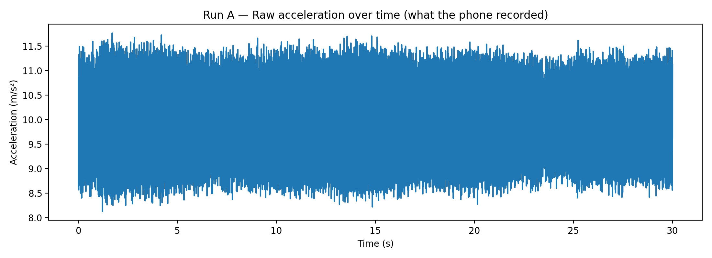
Run A raw.
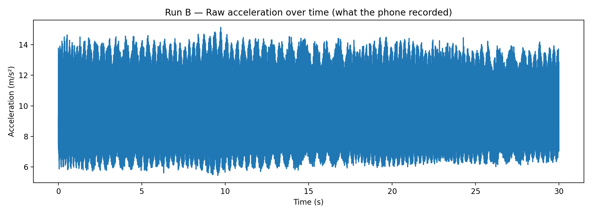
Run B raw.
We remove slow drift and focus on a vibration band (about 5–200 Hz). This is similar in spirit to filtering/conditioning done in real measurement chains.
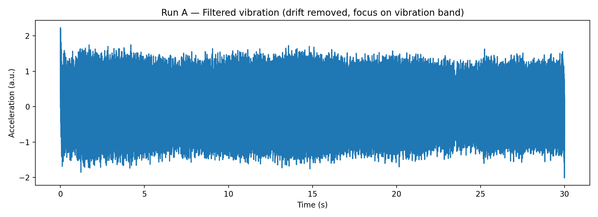
Run A filtered.
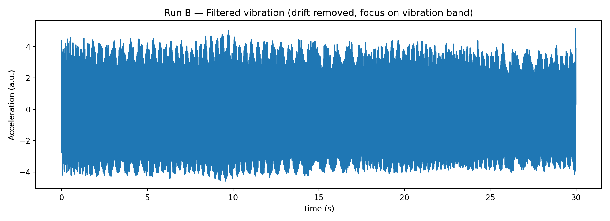
Run B filtered.
RMS is like “average vibration strength”. Rolling RMS shows if vibration is steady or fluctuating.
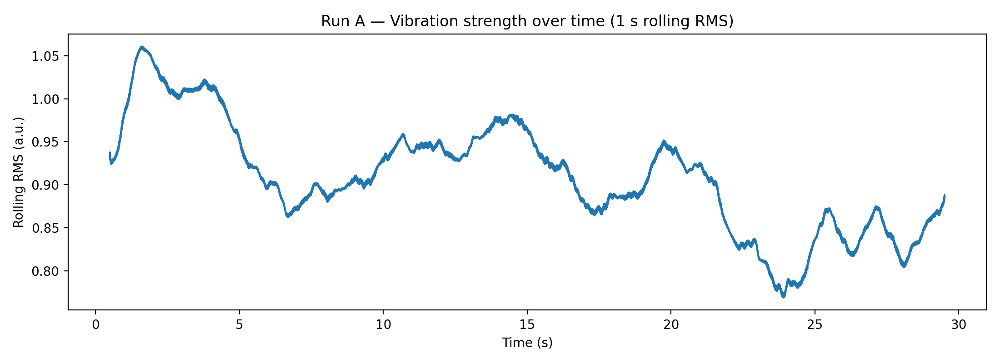
Run A rolling RMS.
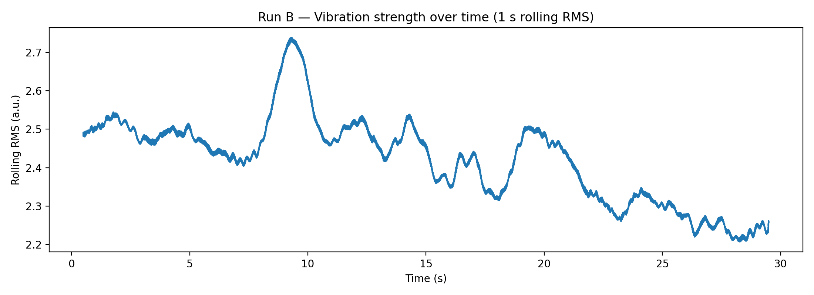
Run B rolling RMS.
FFT/PSD show which frequencies dominate. For rotating machines, the main “rotation-related” component is often around 1X (once per revolution), plus harmonics (2X, 3X) and other features (blade-pass, bearing-related tones).
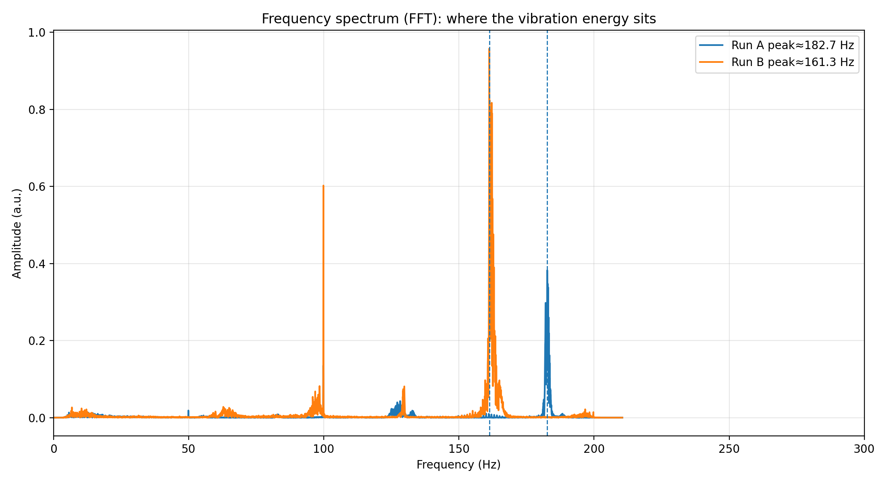
FFT overlay: dominant peaks highlighted.
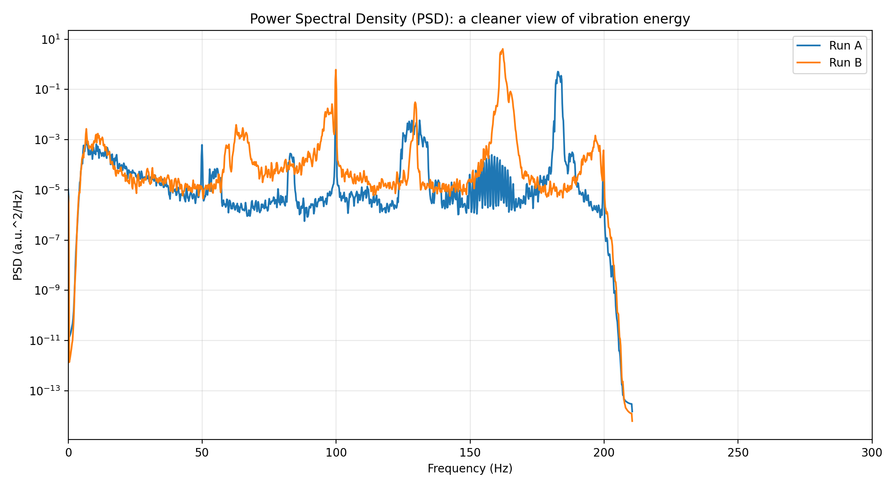
PSD overlay: smoother energy comparison.
Spectrogram is a “movie” of frequencies over time. If speed ramps up/down, you’ll see the bright bands move.
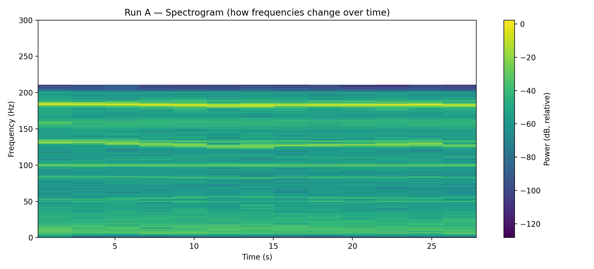
Run A spectrogram.
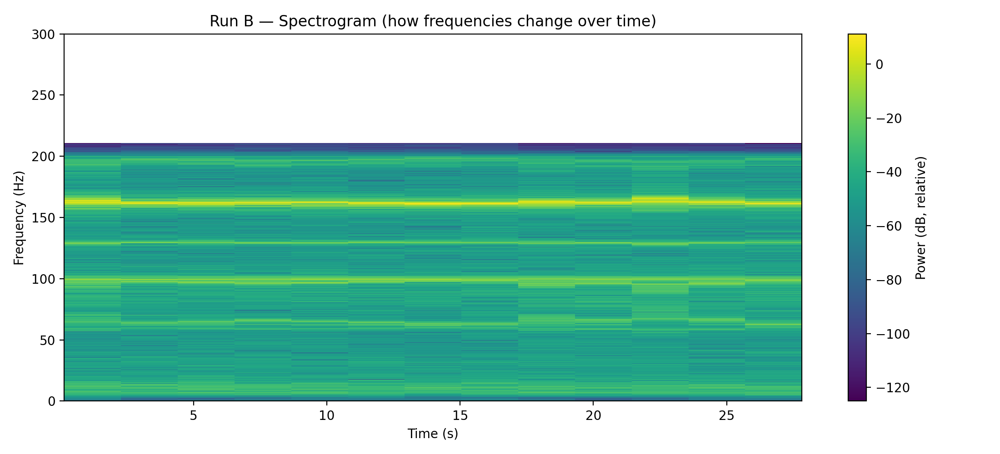
Run B spectrogram.
This bar chart compares a few “easy-to-explain” metrics. If you’re presenting this informally, this is the quickest visual.
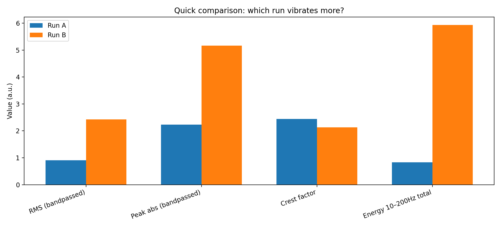
Run B has higher vibration energy (in this dataset).
Limitations: phone MEMS accelerometer is not a calibrated industrial setup; mounting and airflow can add noise; high-speed components above Nyquist may alias. Still: the approach demonstrates the diagnostic method.
summary_metrics.csv — the numbers in a spreadsheet-friendly format